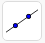

1.2 Translasi Bidang
1. Tekan button pembahasan ( ) untuk melihat penjelasan jawaban pada contoh soal
) untuk melihat penjelasan jawaban pada contoh soal
2. Isilah jawaban pada titik-titik dengan benar
3. Jika jawaban benar, kotak berwarna hijau
4. Jika jawaban salah, kotak berwarna merah
 Translasi Bidang
Translasi Bidang

Diketahui segitiga \[ABC\] pada gambar 3 di atas. Tentukan bayangan bangun tersebut oleh translasi :
a. (-9,1)
b. (1,12)
Pembahasan :
a. (-9, 1)
Koordinat \[A(2,7)\] ditranslasi oleh \[(-9,1)\] menghasilkan \[{A}'(\]\[)\]
Koordinat \[B(2,1)\] ditranslasi oleh \[(-9,1)\] menghasilkan \[{B}'(\]\[)\]
Koordinat \[C(5,1)\] ditranslasi oleh \[(-9,1)\] menghasilkan \[{C}'(\]\[)\]
\[\therefore\] Segitiga \[A(2,7)\] menghasilkan bayangan \[{A}'(\]\[)\], \[B(2,1)\] menghasilkan bayangan \[{B}'(\]\[)\] dan \[C(5,1)\] menghasilkan bayangan \[{C}'(\]\[)\] yang ditranslasikan oleh titik \[T=(-9,1)\].
Menggambar Translasi
Jika telah mengisi jawaban dengan benar, cobalah gambar translasi pada bidang kartesius di bawah ini.
Langkah-langkahnya sebagai berikut:
1. Membuat titik
a. Misal membuat titik A (0,0) dengan mengklik menu 
b. Arahkan kursor ke bidang kartersius pada titik (0,0)
c. Kemudian klik pada titik yang telah dipilih
d. Lakukan hal yang sama untuk titik yang lainnya.
2. Membuat vektor dengan menghubungkan titik-titik pada bidang kartesius
a. Klik menu 
b. Pilih 
3. Membuat hasil bayangan dari translasi
a. Klik menu 
b. Pilih
c. Klik titik A
d. Kemudian klik vektor
b. (1, 12)
Koordinat \[A(2,7)\] ditranslasi oleh \[(1,12)\] menghasilkan \[{A}'(\]\[)\]
Koordinat \[B(2,1)\] ditranslasi oleh \[(1,12)\] menghasilkan \[{B}'(\]\[)\]
Koordinat \[C(5,1)\] ditranslasi oleh \[(1,12)\] menghasilkan \[{C}'(\]\[)\]
\[\therefore\] Segitiga \[A(2,7)\] menghasilkan bayangan \[{A}'(\]\[)\], \[B(2,1)\] menghasilkan bayangan \[{B}'(\]\[)\] dan \[C(5,1)\] menghasilkan bayangan \[{C}'(\]\[)\] yang ditranslasikan oleh titik \[T=(1,12)\].
Menggambar Translasi
Jika telah mengisi jawaban dengan benar, cobalah gambar translasi pada bidang kartesius di bawah ini.
Langkah-langkahnya sebagai berikut:
1. Membuat titik
a. Misal membuat titik A (0,0) dengan mengklik menu
b. Arahkan kursor ke bidang kartersius pada titik (0,0)
c. Kemudian klik pada titik yang telah dipilih
d. Lakukan hal yang sama untuk titk yang lainnya.
2. Membuat vektor dengan menghubungkan titik-titik pada bidang kartesius
a. Klik menu
b. Pilih
3. Membuat hasil bayangan dari translasi
a. Klik menu 
b. Pilih
c. Arahkan kursor pada titik A
d. Kemudian arahkan kursor pada vektor